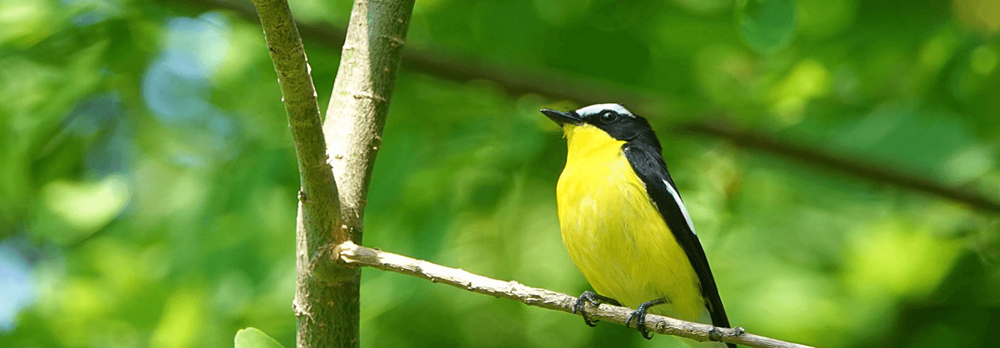

고양생태환경교육센터
기본목표 및 교육방향


비전
지속 가능한 미래를 실현하는
‘ 친환경 도시, 실천하는 시민 ’
목표
-
기후위기 해결을 위한 나눔과 소통,
환경교육의 대중화 -
 교과과정 연계를 통한 지자체와
교과과정 연계를 통한 지자체와
학교의 통합교육 -
시민의 환경의식 개선을 위한
체계적인 원리형 환경교육
추진과제
- 환경교육 기반강화
-
공교육과
함께하는
환경교육 -
사회환경교육
확대 -
환경교육
협력확대
추진방향
- 1각 계층 대상 환경교육
- 2학교-지차체 협력을 통한 융합형 환경교육
- 3기후위기와 환경재난 대응을 위한 지속적인 미래형 환경교육
- 4미래사회변화에 대응하는 다방면 접근성 환경교육
- 5실질적 인식변화를 이끄는 원리형 환경교육